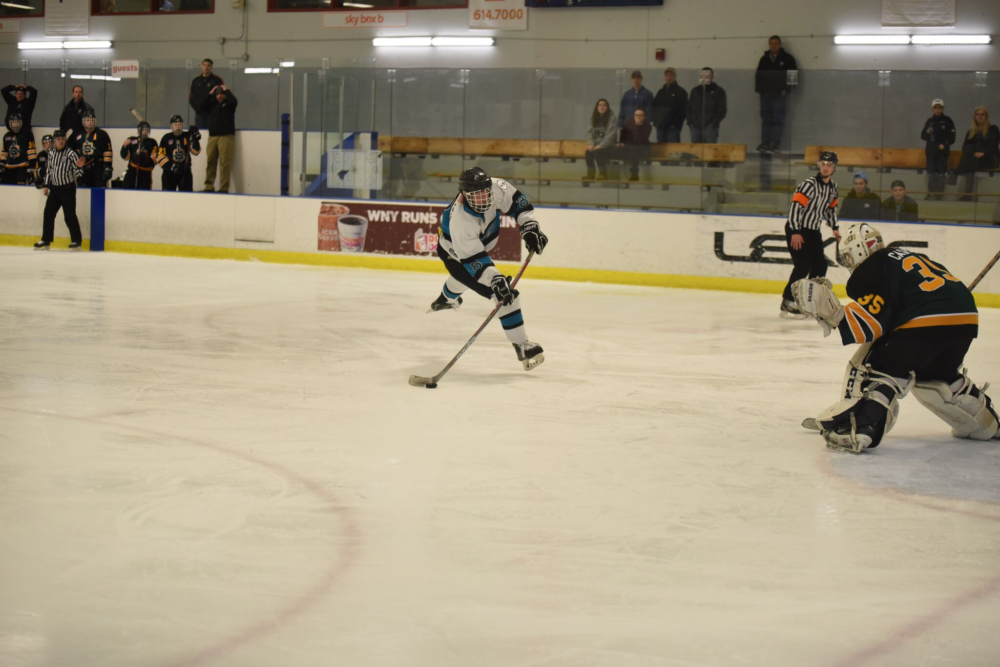
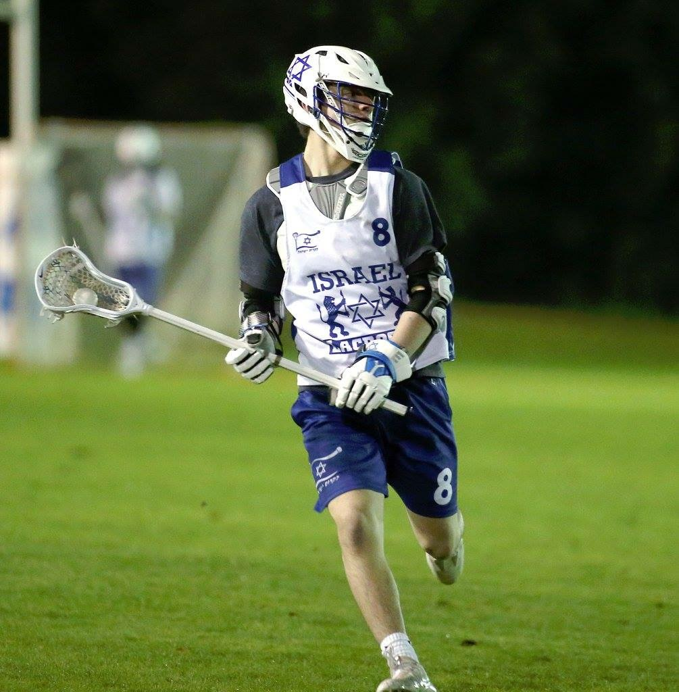

I have played ice hockey since I was 6 years old. It is my favorite sport and it's where I have met some of my best friends. My team has traveled all over the country to play games. We have also gone to Canada to play in Toronto and Quebec.

I also have played lacrosse since middle school. While I started playing lacrosse much later, it is the sport I have excelled most in. I was recruited to play Division 2 and 3 lacrosse in college and played for the Israel U-20 National Team.
Overall, sports have been a huge part of my life and are where I've met amazing people, learned to work hard, to fail, and what it takes to succeed.